US — United States
The main impact of a 200 basis-point (2.00 percentage-point) rise in United States interest rates on the United States is a 0.52% drop in GDP by the 12th quarter — a large domestic hit, as expected when the shock originates in the country whose policy rate is moving. This is the model's impulse-response to a US monetary tightening, and it is the largest GDP effect in the sample; the US ranks first by absolute GDP impact and sits in the "large" band. The peak arrives at Q12, at −0.5161% versus baseline, and the effect has not fully faded by Q20, where GDP is still −0.2048% below baseline. There is no sign change along the path: the level of activity stays depressed throughout the twenty-quarter horizon, just at a diminishing rate.
Demand and trade. Household consumption falls to −0.3286% at Q12 and remains at −0.1492% by Q20, tracking the income and wealth effects of tighter policy. Private investment is hit much harder, peaking at −2.7821% in Q8 — the cost-of-capital channel is the sharpest domestic transmission route, and it is still −0.6558% below baseline at Q20. Net exports, which in this model is the trade balance and is not split into imports and exports, deteriorate modestly, reaching −0.0334% at Q19 and −0.0333% at Q20; the drag is small but persistent. Government spending rises slightly, peaking at +0.0997% in Q12, a mild automatic-stabiliser offset, and government debt falls to −0.1017% at Q14 before easing to −0.0608% by Q20 — lower debt service and a smaller deficit path dominate.
External / FX. The real exchange rate, read as currency strength, depreciates: it falls to −0.7789% at Q14 and is still −0.6989% below baseline at Q20. A weaker dollar would normally support net exports, but here the trade balance still deteriorates slightly, because the dominant effect is weaker domestic demand pulling in fewer imports rather than a competitiveness gain — the exchange-rate move is a symptom of the rate differential and the growth slowdown, not a large net-export boost.
Labour. Employment falls to −0.5357% at Q14 and is −0.3518% below baseline at Q20. Unemployment rises in parallel, peaking at +0.3131 percentage points in Q15 and still +0.2429 points at Q20. Real wages decline steadily, reaching −0.5325% by Q20 — the largest real-wage effect in the horizon, reflecting weaker labour demand and lower marginal product as the capital stock adjusts.
Prices. CPI inflation falls to −0.0416 percentage points at Q11 and is −0.0152 points below baseline at Q20. Domestic inflation peaks at −0.0291 points in Q11, and firms' marginal cost falls to −0.3095% at Q12, still −0.1228% below baseline at Q20. The price response is small in absolute terms but consistent: tighter policy cools demand, compresses margins, and pulls inflation down gradually.
Financial conditions. The local policy rate rises to +1.1678 percentage points at Q8, then decays to +0.0802 points by Q20 — the model assumes a persistent but fading tightening. Government bond prices fall sharply, peaking at −7.6827% in Q8, the largest single financial response, and remain −0.528% below baseline at Q20. The 2-year government yield peaks at +0.7781 points in Q5, the 5-year at +0.4347 points in Q2, and the 10-year at +0.2249 points in Q1 — a classic inverted response, with the front end moving most and the long end barely budging. Equity prices fall to −1.8188% at Q11 and are −0.6802% below baseline at Q20. Tobin's Q, the value of installed capital, falls to −1.9475% at Q8 and is −0.4591% at Q20. House prices decline to −0.5276% at Q19 and −0.5244% at Q20. Bank credit supply contracts to −0.1485% at Q18 and −0.146% at Q20, while the lending spread widens by +0.0022 percentage points at Q18 — a small but persistent credit tightening.
Sectoral and capital. Services GDP falls to −0.3974% at Q12 and is −0.1577% below baseline at Q20, carrying most of the aggregate decline. Manufacturing GDP actually rises, peaking at +0.176% by Q20 — a relative gain, likely from the weaker currency and a rotation in demand, even as the overall economy contracts. The capital stock declines steadily, reaching −0.1469% at Q20, the slowest-moving series, reflecting the cumulative effect of weaker investment.
Timing. The GDP hit is largest at Q12, at −0.5161%, and has not faded by Q20: the level remains −0.2048% below baseline. The peak is late because investment and the capital stock adjust slowly, and the policy rate itself peaks at Q8 before decaying. There is no quarter in which GDP returns to baseline within the horizon.
Close. These are model impulse responses to a 200 basis-point US rate rise, not forecasts. They describe how the model economy deviates from its baseline path under the stated shock, with all other shocks held at zero. The reader should treat the magnitudes as conditional on the model's structure, not as predictions of what will happen. Number check vs JSON: GDP peak -0.52%, CPI 3y -0.25pp, equity peak -1.82%.
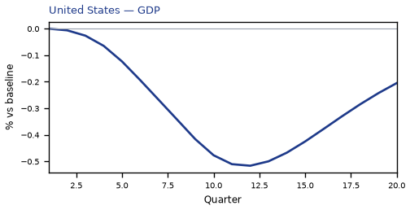
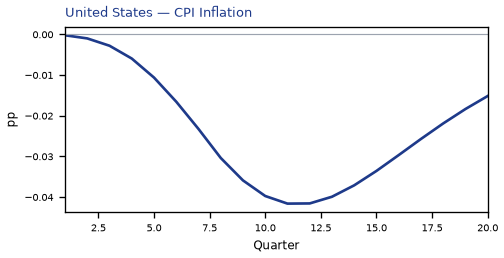
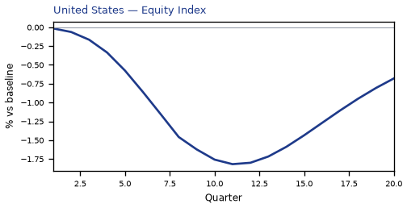
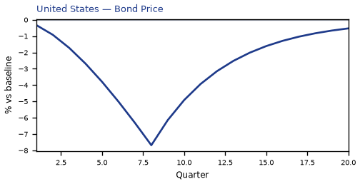
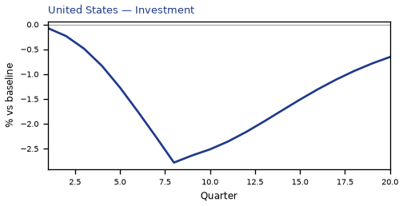
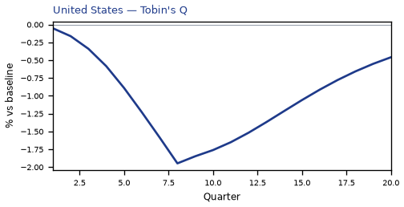

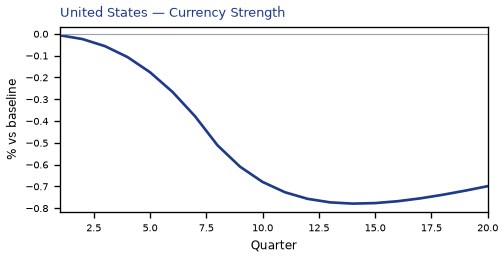
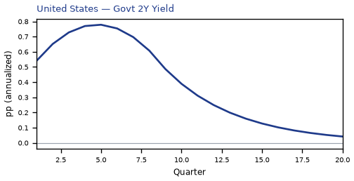
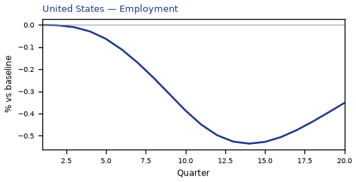
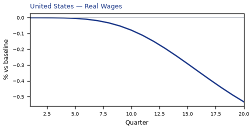
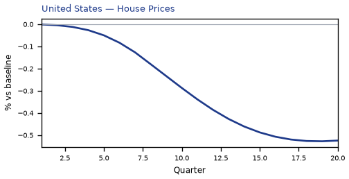
source=live · global_macro_v5 · contract v6 · Q1–Q20 JSON · not financial advice